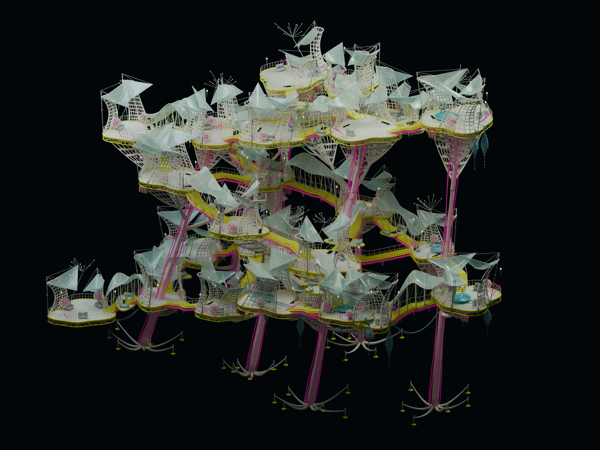

Ocho plantas modeladas en 3D y tres ensayos sobre la parcela. El cambio de planta baja modifica la sección: espacios comunes a 0, primera vivienda a +4,20 m, con galería, escalera y ascensor.

Referencia original verificada: 1.707 objetos, 23 capas. Su autoría de sistemas y su carácter fantástico no constituyen un cálculo de este proyecto.La relación más importante es una red de conexiones que se ensanchan y se convierten en lugares. Separar bandeja, soporte y piel ayuda a hacerla legible.
Los ensayos recuperan esa anatomía y la secuencia entre calle, común y habitación. La trenza vertical y la forma global del conjunto siguen pendientes. Poner telas o colores por sí solo no recupera su organización.
La nueva planta baja consume programa y superficie: el objetivo de 1.500 m² exige revisar duplicaciones entre grupo doméstico y edificio.
| Mecanismo de la referencia | Traducción en esta entrega | Qué falta o qué se descarta |
|---|
| Enlace que se ensancha y se habita | E01: encuentro mayor; E02: continuidad de una casa de ocho; E03: dos ámbitos y un umbral. | Todavía no constituyen la doble trenza vertical de toda la megaestructura. La unión debe juzgarse por usos y recorridos, además de su forma. |
| Suelo, soporte y piel separados | Bandeja con cordones y diagonales, apoyos bajo la vivienda, techos privados y sobretechos separados. | Los tubos y uniones nuevos son hipótesis. No tienen un dimensionado estructural propio. |
| Troncos y ramas | En los ensayos de parcela los troncos soportan la bandeja desde la planta baja y ramifican bajo el suelo superior. | No se introducen en el centro de habitaciones o accesos. Falta comprobar cargas, estabilidad, uniones y cimentación. |
| Tiendas íntimas dentro de una infraestructura común | Habitación individual cerrada, vestidor transitable, bow pequeña con asiento cóncavo y tablero por canto corto. | La igualdad de prestación privada es intencionada; no obliga a repetir la organización colectiva. |
| Telas con funciones diferentes | Sobretecho individual ventilado; cubierta común más alta y plegada; cámara y paños translúcidos separados del techo privado. | Son superficies diseñadas para comparar espacialmente. No se ha realizado búsqueda de forma por equilibrio, pretensado, análisis de viento o drenaje. |
| Organización visible | Conducciones cian y magenta, estructura de borde y acceso colectivo legible. | Los colores no prueban funcionamiento. No se copian órganos inventados como instalaciones reales. |
| Agua suspendida y depósitos | No se multiplican por las casas. | La necesidad, carga, higiene y mantenimiento deben justificar cada depósito antes de incorporarlo. |
| Laberinto de cotas y vistas | Galería a la vivienda desde la escalera y ascensor; planta baja compartida bajo las bandejas. | Aún no se apilan los grupos ni se resuelve la forma completa. No se inventa una red de escaleras que termine sin descarga a calle. |
Catálogo para comparar las distribuciones sin apilarlas. Estas cotas de comparación no equivalen a situar viviendas en planta baja.